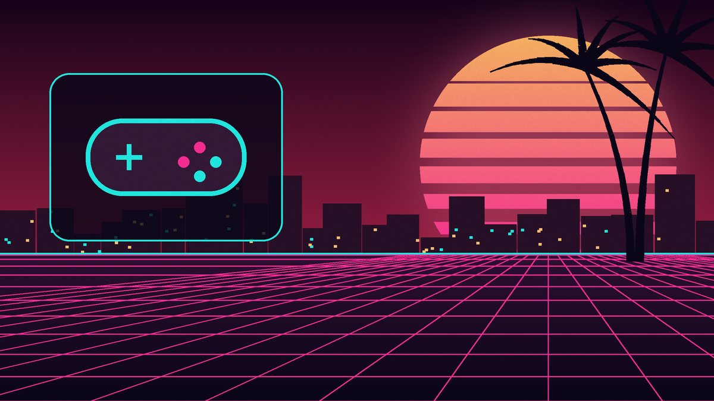

Cómo desbloquear el buceo en GTA 6: la misión que te regala el equipo y el detector de metales
El buceo no está disponible desde el principio: se abre al terminar Island Dreams, la misión de Kenton Rees en el capítulo 1. A partir de ahí tienes equipo y detector de metales gratis en su barco.
Por Redacción Golpe Diario · Publicado el · Actualizado el

Qué ha pasado
Island Dreams es la décima misión del capítulo 1 y te presenta a Kenton Rees, el dueño de Island Dreams Boat Charters, en Key Lento. Durante la misión te enseña a usar el detector de metales debajo del agua, según las guías de Rare Thief y GMTreks. Games.gg cuenta que el primer encargo es un viaje en barco para una despedida de soltero: te pones el equipo cuando te lo piden, buceas y, en PS5, nadas más rápido con L3.
Al acabarla, Kenton te escribe para que vuelvas a la tienda, te deja su barco y te da el equipo de buceo y el detector. Su barco está amarrado delante del local y sale en el mapa con el icono KR, y también encontrarás equipo en el barco del muelle que hay detrás de la casa de Jason, en la parte de delante, junto a las cañas de pescar. Rare Thief avisa de que el barco de Jason vuelve al muelle de su casa pasado un tiempo, y de que los barcos no se pueden repostar todavía: limita la distancia.
Para ponértelo hay que acercarse al equipo en el barco y pulsar el botón de interacción, la Y en Xbox. Cuando termines de bucear vuelves al mismo sitio, lo pulsas otra vez y recuperas tu ropa. Los sitios de buceo aparecen en el mapa con un cofre morado, y al pasar el cursor sale cuántos tesoros llevas allí. Games.gg suma que el detector se elige en el hueco inferior derecho de la rueda de armas.
Abajo, el detector marca los puntos donde hay algo enterrado: los destellos verdes y los pitidos cada vez más rápidos indican que te acercas, y al llegar sale la opción de recuperarlo. Games.gg recomienda barrer despacio, porque la señal es direccional, y seguirla sin cambiar de dirección. Cada naufragio tiene varios objetos y se puede volver otro día por los que se hayan quedado.
Lo que saques se lo vendes a Kenton, que paga una comisión y, según Rare Thief, un extra si encuentra comprador. Hay un extra por completarle conjuntos enteros. Si te sale un tiburón, defiéndete con el arpón Arras Bullhead, que tiene munición limitada: guarda los disparos para ellos. Games.gg habla de 33 hallazgos submarinos para el 100 % y de cinco de los siete conjuntos de Kenton.
Qué significa para ti
- Hasta que no acabes Island Dreams no busques equipo de buceo: no vas a encontrarlo.
- El equipo y el detector son gratis, así que bucear es dinero sin poner nada por delante.
- Antes de salir con el barco, piensa la distancia: los barcos no se pueden repostar, según Rare Thief.
- Barre despacio con el detector y sigue la señal: un barrido rápido te hace perder la dirección.
- No hace falta vaciar un barco hundido de una vez: puedes volver otro día a por lo que te dejaste.
Lo tienes también en la guía: Cómo ganar dinero en GTA 6 · Trucos y consejos para el modo historia de GTA 6
Contrastado con: Rare Thief · GMTreks · Games.gg
Sigue leyendo
El asalto al furgón blindado con Billy: 2.000 dólares, la moto y el camino exacto de huida
Billy, el de las carreras de motos del Thrillbilly Mud Club, te escribe unas horas después de su carrera para reventar un furgón blindado. La misión es opcional, cuenta para el 100 % y paga 2.000 dólares, aparte de la moto de cross con la que vas al golpe.
Siete sitios donde GTA 6 te regala un arma única, lanzacohetes incluido
Por el mapa de Leonida hay variantes únicas de armas en cabañas, barcos encallados y búnkeres, sin misión y sin pagar un dólar. Estas son las siete que coinciden en varias guías, con el sitio exacto, lo que hay que hacer en cada una y los tres códigos del puesto de Pelican Valley.
Cómo usar bien el Focus en GTA 6: cámara lenta, botín marcado y disparar sin matar
El Focus es la habilidad que más cambia un atraco en GTA 6, y el juego apenas la explica. Se activa pulsando los dos joysticks, fuera del combate no gasta barra y, apuntando, te dice en qué parte del cuerpo disparar para dejar a alguien fuera de juego sin matarlo.